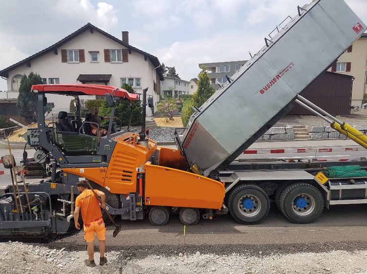
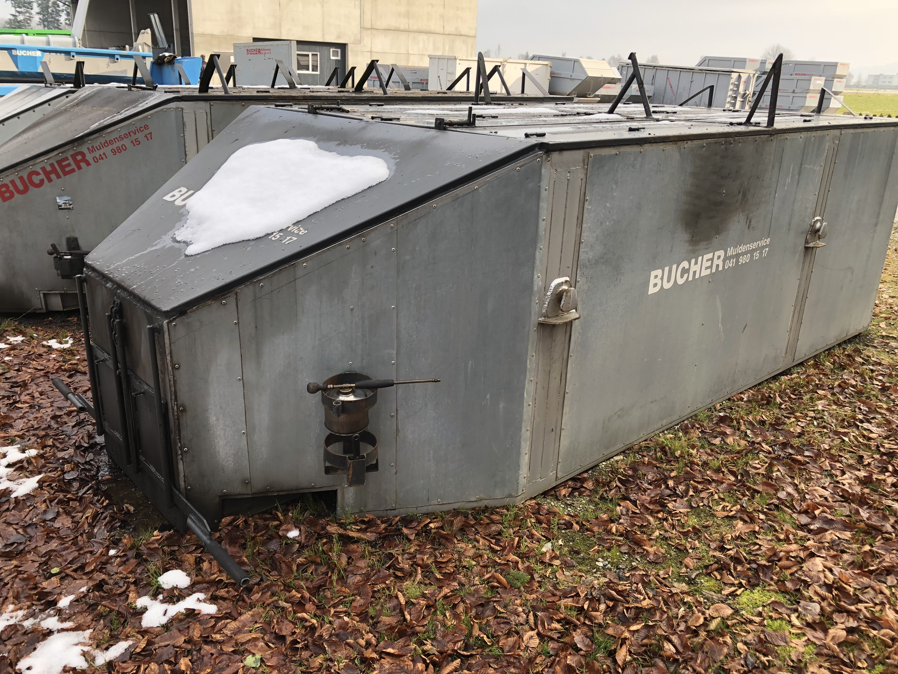

KIPPEREI- / ASPHALT-TRANSPORTE
IHR PARTNER FÜR BAU & STRASSE
Transporte von Schüttgut & Asphalt
Ob Bauprojekt, Straßenarbeiten oder Materialtransporte – wir sind Ihr zuverlässiger Ansprechpartner für Kipperei- und
Asphalt-Transporte.
Egal ob Kies, Sand, Aushub, Asphalt oder allgemeine Baustellen-Transporte: Mit unserem modernen Fuhrpark und
erfahrenen Fahrern garantieren wir einen reibungslosen Transport, abgestimmt auf Ihre Anforderungen. Von
Schötz aus bedienen wir die ganze Zentralschweiz und sorgen dafür, dass Ihre Materialien dort ankommen, wo
sie gebraucht werden.





×